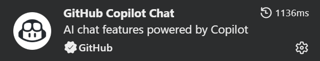
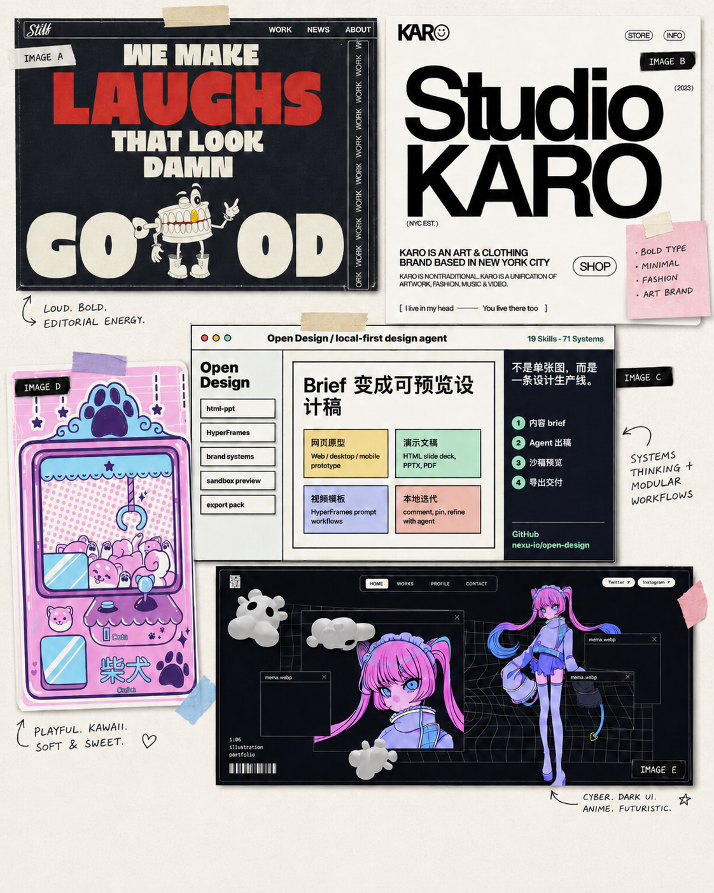
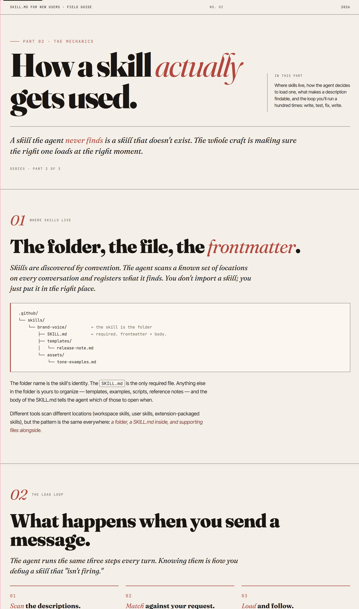

Click the Copilot icon in the VS Code title bar, or press Ctrl+Alt+I on Windows / Linux (Cmd+Ctrl+I on macOS). The Chat panel opens on the right.
Copilot auto-discovers skills under .github/skills/. No install command. No restart.
Don't see the Copilot Icon?
If you don't see a Copilot icon, install the GitHub Copilot Chat extension from the Extensions view first.

03 · choose a path
Pick the path that matches what you've got.
Path A · with mood board
Drop in images + write a prompt.
Attach 1–5 reference images (inspiration posters, screenshots, swatches). Then ask:
Use the moodboard-to-html skill to
turn these images into an HTML presentation
about how to build cute custom PCB designs.

Path B · no mood board
Just describe what you want.
No images needed — the skill falls back to a default editorial theme:
Create a presentation
guide to teach what
a Skill is for new users.

04 · output
Where the file lands.
The skill writes a single self-contained HTML file with CSS inline. Open it in a browser to preview, or commit it to your repo and publish it with GitHub Pages — no build step required.
faq · troubleshooting
Common questions.
Copilot doesn't see my skill — what now?
Double-check the path is exactly .github/skills/<skill-name>/SKILL.md. If it still isn't picked up, reload the VS Code window (Ctrl+Shift+P → Developer: Reload Window).
Which Copilot model should I use?
Any current GitHub Copilot Chat model works. For Path A, pick a model with vision support — image-aware models give noticeably better mood-board results. Recommended options include Anthropic Opus 4.6 or 4.7, or OpenAI GPT-5.4 or GPT-5.5.
Can I edit the output?
Yes. The output is plain HTML with inline CSS — edit it like any other file, or ask Copilot to iterate on it.